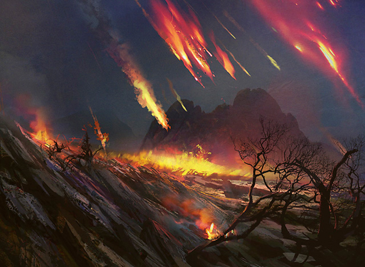

作者：Mark Rosewater
译者：Pa_Cha
原文地址：https://magic.wizards.com/en/articles/archive/making-magic/nuts-bolts-higher-rarities-2012-02-27
译文地址：https://tieba.baidu.com/p/4064497882
“螺母和螺栓”专栏是我从三年前开始撰写的。在这里我会为大家讲一些卡牌设计工作中的小技巧。首先我介绍了卡牌代码以及设计师是如何根据它来逐步完成卡牌文档的。有些读者非常喜欢卡牌文档这个理念，于是我在第二年又写了一篇讲解设计骨架的文章。因为设计骨架恰恰是设计师用来初始化卡牌文档的工具。
显然，这一部分读者也非常关心如何来创建他们自己的设计骨架。因此我接下来又在这个专栏里撰写了填充设计骨架的文章。截止目前“螺母和螺栓”专栏已经有些偏离我最初的写作目的了，它看上去更像是“如何制作卡牌文档”专栏。不过事已至此，况且这个主题也有足够的内容让我每年都能接着写下去。现在就让我们书接前文。希望大家已经读过此前几篇文章了，今天我将继续带着大家制作卡牌文档。
“螺母和螺栓”前文回顾
我上次讲到了用普通牌来填充设计骨架。今天我将要谈谈更高稀有度卡牌对设计骨架的填充。
我今天拿来做范例的系列名叫“公正”。它所属的环境包括“真相”、“公正”和“美国风”三个子系列（此环境专为本专栏设计）。“公正”是一个由145张卡牌组成的小系列——60张普通牌、40张非普通牌、35张稀有牌和10张秘稀牌。这个系列的主题是坟墓场，并将涉及“真相”系列中的坟场相关机制。
上篇文章中我谈到了用普通牌来填充设计骨架。今天我原本打算从非普通牌开始的，但一件重要事情的发生使我决定还是再就普通牌的填充问题多说几句。
普通牌
这件“重要事情”用R&D的话来说就是“新世界秩序（NWO）”。我去年12月曾专门写过一篇关于它的文章。我将会谈到这个新理论，所以建议大家最好先读下这篇文章。R&D提出新世界秩序理论的初衷是为了降低游戏门槛，以便让更多新玩家入坑。不过这个理论同时也让万智牌的文字部分更加明晰。新世界秩序迫使我们在设计普通牌时要对它的复杂度采取非常谨慎的态度。
新世界秩序要求我们在填充普通牌位置时要考虑到以下几个问题：
- 这张牌理解起来都多难？能否在读完后立刻明白它的意思？这两个问题的答案就是所谓“理解复杂度”。那些稍显晦涩的卡牌要么将被设置为更高的稀有度，要么将被剔除。
- 这张牌在战场上会与其他卡牌有多少互动方式？是否会因为这张牌在场上，而导致玩家必须重新估算战场上其他卡牌的价值？对此我们称之为“场面复杂度”。那些会大幅增加战场上永久物操作选项的卡牌会被设置为更高的稀有度。换言之：如果这张牌会对场上好几个其他永久物产生影响的话，除非它的用途非常受限，否则我们至少会将其设置为非普通牌。
- 这张牌是否会增加额外的策略预判？一位优秀的牌手是否会由于能更好地理解这张牌而获得优势？这就是所谓“策略复杂度”。只要一张牌针对这两个问题的答案都是否定的，那么我们就会把它设置为普通牌。这种设置可以在不增加游戏入门难度的前提下，也能让高级玩家区别于初学者。
不过有时可以适当增加普通牌的复杂度，但却是有所限制的。这样做的前提是相对复杂的普通牌一定要有助于突显系列主题。一张并非出于设计需要却超越了复杂度限制的普通牌要么被提高稀有度，要么被剔出这个系列。另外，一张体现了系列主题的卡牌要想维持其普通稀有度，就不能过于复杂。
新世界秩序所涉及的另一个内容就是“关注点”问题。万智牌的大多数新系列都会让玩家去关注一些他们一般并不会去关注的内容。这一点并没错，但为了避免整个系列过于复杂，你必须要让玩家的主要关注点集中在普通牌上。例如，赞迪卡系列中的地落机制会让玩家关注下地这个他们以往并未关注过的内容。这样设置之所以合理，是因为下地就是这个系列的关注点。赞迪卡系列没有让玩家再拥有另一个关注点。
所以说你必须对一个卡牌系列带给玩家的关注点加以限制，换句话说，不要搞成五张牌涉及A特点、另五张牌涉及B特点、还有五张牌涉及C特点。而是应该让这十五张牌全都只涉及A特点。不过需要记住的是，你可以在同一个关注点内设计一些变化。还是以赞迪卡为例，这个系列有许多与地牌相关的元素，因为它的关注点就是下地。
在开始谈非普通牌前，我再针对完成普通牌填充的问题强调最后一点。第一次对局测试需要使用到全部普通牌，因为这样可以最大限度地确定系列主题和机制是否足够明显和引人关注。更高的卡牌稀有度将允许你引入更高的复杂度（这是一件好事——新世界秩序并非试图消除所有复杂的元素，而只是希望保证将每个补充包所开出复杂牌的数量保持在较低水平），但复杂度的提升将加大你保持系列中所包含卡牌功能的难度。
设计工作的座右铭就是：既然普通牌已经把能做到的都确定下来了，非普通牌就不要再有出格的功能了。
非普通牌
只有在设计骨架中的普通牌填充基本完成后再开始设计非普通牌才有意义。因为普通牌的功能将在很大程度上决定非普通牌的需要。我一般都会先创建一个空白的非普通牌骨架，然后根据在制作普通牌过程中发现的需求进行填充。这些需求大致有如下几类：
- 在制作普通牌过程中，你会不可避免地发现一些卡牌并不适合普通稀有度。一部分是处于新世界秩序的原因，而另一部分原因就是地方不够了。在系列设计的最开始，你会有许多很酷的想法。但在设计普通牌时，你会感到太受拘束并无法完全实现那些酷酷想法。解决这个问题的关键就是确定那些想法应该在普通牌中实现，哪些应该被放到非普通或稀有度更高的卡牌上。
- 在设计普通牌时，你将会触及到与系列主题相关的元素。一旦主题元素被确定，你在更高稀有度卡牌——尤其是非普通牌的设计中也将延续这些元素。更高稀有度卡牌的设计并不单单会让你再次触 及系列主题元素，而且还将允许你实现那些普通牌所无法实现的机制。
- 与上一类相似，你在设计普通牌时会冒出一些对普通牌而言过于复杂的想法。我就经常会从设计团队所所设计的普通牌中寻找非普通牌的候选方案。普通牌的设计非常难，但在设计过程中把它们做得非常酷，但却不符合普通牌的要求是很容易的。每当做出一张显然不能成为一张普通牌的普通牌的时候，我会直接把它放到非普通牌的备选位置，以便在之后的工作中能够尽量用到它。
一旦我完成了整个系列的普通牌设计，并开始了针对非普通牌的构思，我会把普通牌设计过程中那些有可能成为非普通牌备选的单卡列出一份清单。这类单卡包括以下三种类型：
第一类就是包含了必要信息的单卡。它们具有你在设计普通牌时所建立的系列关注点内容。这类单卡要在制作非普通牌时尽量去使用。
第二类就是那些与你的设计理念相符却与环境结构并无固有联系的单卡。例如一些非常能够凸显系列主题，但在系列中却又没有扮演特定角色的单卡。将这类单卡列出来很重要，因为它们会在你无法做出明确决定的时候作为备选项。
最后一类就是那些本身创意很好却不会对整个系列起到积极作用的单卡。这些单卡不会对塑造系列主题起到任何作用。在早期设计中，设计者为了迎合一些不必要的元素而设计出一些不合时宜的单卡。这种做法要尽量杜绝。
总而言之，上述第一类单卡将会帮你确定非普通牌的大体内容；第二类将会在你感到困惑时为你指引一条思路；第三类则不会有任何帮助，它们会让你明确认识到那些牌是不该设计出来的。不过也并不是说第三类单卡就完全不能被放进系列之中，只是它们的加入对系列主题的塑造而言并无益处。
现在我们就已经把制作普通牌过程中所产生的材料进行了分类，下面就可以开始搭建非普通牌的设计骨架了。非普通牌设计骨架的搭建和普通牌一样，保持相同的生物-非生物咒语配比，当然可以根据需要稍作调整。
你可以把搭建普通牌设计骨架的方法同样用在非普通牌上。两者最大的区别就是此时你的材料库中已经有了很多可用内容。刚才提到的第一类单卡会帮你确定非普通牌需要具备的大体内容。就像我去年曾说过的那样，从可以确定的部分开始，然后再按照自己的思路走下去。

下面说一些非普通牌需要大家了解的特点。
首先，非普通牌对万智牌设计师们来说是整个系列的一个衔接点。在限制赛中，它们会在复杂度方面比普通牌提升一个层次，同时又要比稀有牌的复杂度低。所以说非普通牌设计局限度还是很大的。非普通牌在系列中起到的作用和普通牌差不多大，但在卡牌数量上却占据了66%的份额（在大系列中是60%）。因此在设计每一张非普通牌时都要格外谨慎。那些没有特定目的性的卡牌必须要被剔除。
第二，许多设计者似乎都对非普通牌在限制赛中的影响力有所误解（以及那些只没开几个补充包就开始拿那些牌来对战的包娱乐构筑玩家）。对此最好的解释方法就是R&D所提出的一个“as-fan”理念。所谓As-fan就是指你随机打开一个补充包时，拿到某张或某类卡牌的几率。设计团队和开发团队会对系列的各个方面有一个预期。通常，首席设计师（以及后来的首席开发）会为这个预期设定一个等级。比如说，我们将一个新的坟场机制定为某个系列的关键元素。为了让这个机制对系列产生足够的影响，我们可能会把as-fan定为2。也就是说，每个补充包中平均会出现两张具有这个坟场机制的单卡。
在计算as-fan时，非普通牌的出现概率是普通牌的一半。（请注意我举的这个机制as-fan例子是按最高比例计算的。）在系列所有卡牌中随意进行抽取，那么每抽出一张非普通牌的概率相当于抽出两张普通牌的概率。我想说的是，虽然普通牌在设计工作中已经占了挺大份额，但非普通牌的出现概率也是相当可观的。
在设计和选取非普通牌时，要时刻牢记如下几点：
- 填充系列主题：普通牌的作用就像是卡牌系列的样本公式。你可以通过普通牌来确定这个系列是关于什么内容的。无论内容是什么，你都需要让这个主题在非普通牌中依旧有所体现。我一直都在说主题在普通牌中的体现如何如何重要。其实在非普通牌中也是一样。
- 提升生物身材和非生物咒语效果规模：我常提到普通牌是如何对复杂度进行限制的。其实它们在尺寸上也有所限制。大多数颜色中的普通生物牌的力量都不会大于3（蓝色通常会有一张而绿色会有一 或两张）。而普通非生物咒语也大都具有相对小规模的效果。非普通牌则允许设计者提升生物的身材和非生物咒语的效果规模。
- 提供复杂度：每当谈及新世界秩序，我都会强调要让普通牌的复杂度越低越好。但我不常说一点就是其他稀有度的卡牌是应该具有一些复杂度的。新世界秩序并非要让万智牌变成一个没有复杂度的游戏，而是对处在不同位置的卡牌设定不同的复杂度。我一直笃信复杂度是一款游戏不可或缺的特点，但对于普通牌来说，要尽量降低复杂度。非普通牌之所以重要，是因为它们很大程度上决定了限制和娱乐构筑玩法的复杂度。所以在设计非普通时，一定要加入与系列主题和机制密切相关的内容。
- 帮助玩家取胜：你在全普通牌对局测试中会深切感受到需要一些可以让局势发生重大转折能力的卡牌。没错，一盘对局可以按照你喜欢的方式进行，但也要让对手握有翻盘的机会。（这就是所谓“逆转特色”。）这类卡牌可以是可以消灭战场所有生物的清场咒语、可以是扭转战斗局势的大型生物、也可以是能让你获得局面控制权的咒语。这些咒语中效果最为显著的会出现在稀有或秘稀卡牌中，但非普通牌中也要拥有一些，因为我们要让每套牌都有扭转比赛局势的能力和机会。
- 形成轮抓思路：非普通牌的另一个要点就是它在限制赛中的作用。稀有牌和秘稀牌由于出现几率较低，设计者不能指望它们对轮抓产生太大影响。非普通牌就不同了，玩家会在轮抓中拿到相当数量的非普通牌。有的非普通牌甚至可以被用来围绕构组套牌。很多非普通牌不但会与普通牌产生配合，还能与其他非普通牌形成很好的互动。我们就希望玩家在第一包拿到某张非普通牌后，会根据这张牌来形成后续的选牌思路。这样的几张非普通牌会对提升轮抓深度产生重要的作用。
可见，非普通牌在卡牌系列中的作用着实不小。既然我们可以从普通牌中得到设计非普通牌的思路。那么稀有牌的灵感也可以源自非普通牌。
稀有牌
虽然乍一看上去并非如此，但稀有牌的确是设计空间最为宽松的一个稀有度类别。这主要是因为稀有牌的任务并不是对系列结构产生影响，而是要给玩家们带来惊喜。引人注目的单卡自然要比充当系列大背景，以便游戏顺利运转的普通和非普通牌占有更少的位置。
我对于设计稀有牌的建议和前面提到制作非普通牌的建议大同小异。只有在非普通牌设计骨架搭建完成后才该开始制作稀有牌。同样，你在填充非普通牌骨架时可以把其中一些列为稀有牌的备选方案。此外，稀有牌的自由度更大， 你可以不必受到系列中生物牌数量比例的限制。按说每种颜色都应该同时拥有生物和非生物咒语，但这个规则在稀有牌范畴内就不那么严格了。
那么稀有牌需要结构吗？也需要一点点。你应该至少做出两个稀有牌卡组。其中一个要契合系列主题，通常要包含新机制。另一个则可以没什么主题特点，但却要让玩家们看到后感到很兴奋。另外你或许可以建立一两个垂直卡组，即包含同种颜色中普通、非普通和稀有/秘稀牌各一张的卡组。
稀有牌的任务有哪些呢？
- 制作让人兴奋的单卡：普通牌要让这个系列可以被顺利玩起来，而稀有牌（以及秘稀牌）则要成为系列的卖点。稀有牌的任务就是要让玩家们希望将它们放入自己的套牌之中。实现这一点的方法有：
- 1) 把卡牌做“大”：我曾经提到过注重游戏体验的玩家们是如何热衷于大生物或强力非生物咒语的。其实具有这一癖好的玩家也不止只有他们。每个人都喜欢释放一个能对对局产生重大影响的咒语。因为这些咒语会引发许多令人难忘的故事。而这些故事的中心思想就是：这太好玩了！
- 2）制作高效卡牌：大生物或强力非生物咒语会让人印象深刻，但效率高终究还是王道。稀有牌中的这类单卡虽然不是万金油，但却会在某种情况下非常高效。
- 3）制作极具特色的卡牌：我们已经知道玩家们在预览时会对很关注一些画面极具特色的卡牌。大家并不总是只对卡牌强度进行评论，插画够酷同样可以吸引玩家。让玩家看到卡牌后在内心产生共鸣也是吸引他们加入到游戏中来的关键。
- 4）制作特殊卡牌：另一个屡试不爽的办法就是做出一些玩家们从未见过的东西。万智牌是一个让玩家不断探索的游戏。因此大家总是喜欢发现一些新元素。请记住不要在一个系列中制作太多特殊卡牌，细水长流才是最好的。
- 制作让人兴奋的单卡：普通牌要让这个系列可以被顺利玩起来，而稀有牌（以及秘稀牌）则要成为系列的卖点。稀有牌的任务就是要让玩家们希望将它们放入自己的套牌之中。实现这一点的方法有：
- 制作更大的生物和效果更强的非生物咒语：如同非普通牌是普通牌强度的升级版一样，稀有牌要比非普通牌的强度更上一层楼。稀有牌可以拥有巨大的身材或强大的效果。当玩家释放一张稀有咒语时，战局是要受到一定影响的。
- 致胜：如果说非普通牌可以帮你取胜的话，稀有牌（和秘稀牌）就意味着胜利。万智牌需要炸弹牌，但为了不破坏限制赛的可玩性，它们只能是稀有或者秘稀牌。
- 加大复杂度：万智牌对局中虽然不需要太多读两遍才能理解的单卡，但还是要有一些的。这些异能叙述冗长的单卡只会出现在稀有牌中。请注意，我们不会把一些非常复杂的单卡设置为秘稀牌，因为我们希望秘稀单卡可以比较直截了当。所以，稀有牌是复杂单卡的唯一归宿。
对于一个卡牌系列最好的测试就是让新手玩家浏览稀有和秘稀牌。如果他们在看后没有兴奋之感的话，就说明你还有许多工作要做。
秘稀牌
在所有稀有度的卡牌之中，秘稀牌是最能让人浮想联翩的了。我在这里想说的一句话就是：每张秘稀单卡都有潜力变得非常强。
这句话的意思就是说，每当玩家看到一张秘稀牌，他们就会联想到一些非常棒的用法。有些发生在你和秘稀牌身上的故事足以让你在多年以后仍然津津乐道。这种事情虽然不会经常发生，但每张秘稀牌都有这样的潜力。
对秘稀牌的这种描述显得有些模糊不清，而且某张牌对一位玩家来说很好用并不意味着它给另一位玩家的感受同样如此。我们的目标就是让每张秘稀单卡能够聚拢一批属于它自己的粉丝群。比如说，或许对背景故事不感兴趣的玩家们对传奇生物并不感冒。但不要紧，我相信每位玩家心中都有自己喜爱的那张秘稀牌，而这恰恰是我们设定这个最高稀有度时所希望的。
骨架完成
设计骨架所有需要填充的部分都已经完成了。要知道我今天讲述的这些内容是很难懂的。填充设计骨架是一个需要耗费大量时间的过程。而且骨架填充完毕还只是卡牌系列设计的开始。我在下篇文章将会继续带领大家设计卡牌系列。希望大家喜欢“螺母和螺栓”专栏，并发表您的感想。